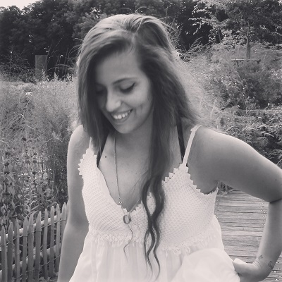

Audrey Garcia Gutierrez, 21 ans.
Diplômée en photographie de l’Institut Redouté Peiffer en 2014, et actuellement à l’ESA Saint Luc Bruxelles en publicité.
Maman me disait constament « Si tu connaissais tes cours comme tu connais les publicités par coeur se serait mieux ».
Depuis toujours omnibulée par la publicité, le dessin et bien-sur la photo cette direction fu donc inévitable.
Concours et contrats importants
- ▲ 2013 - Concours photographique parmis les finalistes
- ▲ 2015 - Photo de qualification reprise sur la carte de fin d’année de la Ministre F. Lanaan
- ▲ 2017 - Photographe du Showcase de Davy Courteaux
- ▲ 2017 - Concours New Blood Awards / DadndAD